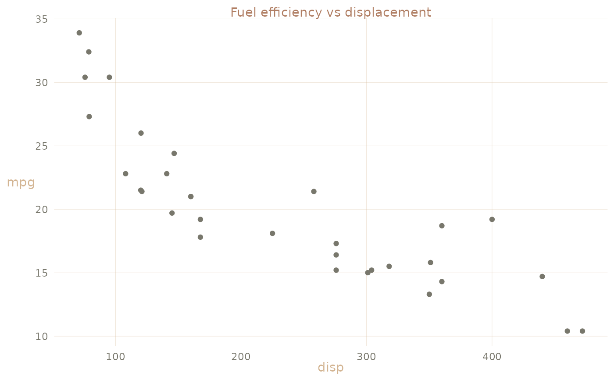
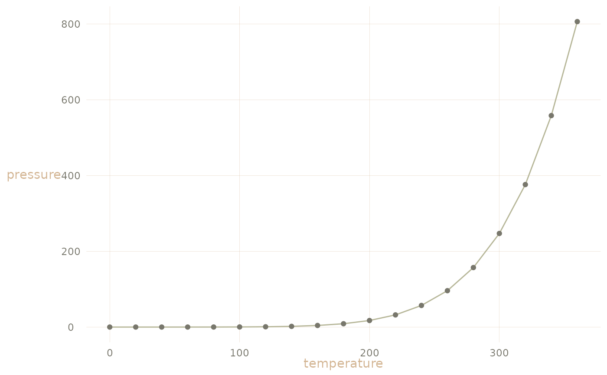
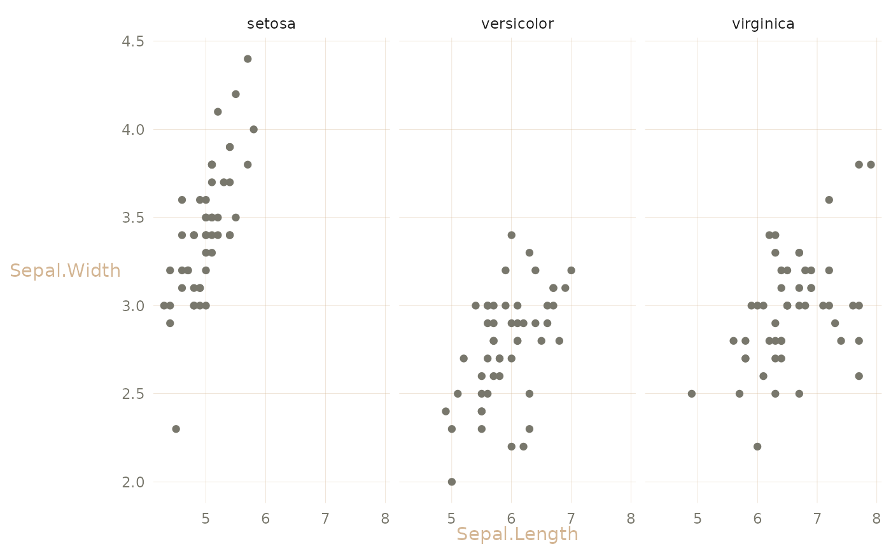

A custom ggplot2 theme that provides a cohesive, aesthetically pleasing color scheme and styling for statistical graphics. This theme sets both default geom aesthetics and plot theme elements to create a consistent visual style across all plots. The color palette uses warm, earthy tones that work well for academic and professional presentations. Reach for it when you want every plot in a document or presentation to share the same warm, muted look without styling each one by hand.
Details
Note that, in addition to returning a theme, calling theme_lc() sets
session-wide geom defaults (point, line, smooth, segment, hline colors)
via ggplot2::update_geom_defaults(). These defaults persist for the rest
of the R session, even on plots that don't use the theme.
Examples
library(ggplot2)
# Scatterplot with the theme's warm-gray points and beige grid
ggplot(mtcars, aes(disp, mpg)) +
geom_point() +
labs(title = "Fuel efficiency vs displacement") +
theme_lc()

# The theme also restyles lines and smooths
ggplot(pressure, aes(temperature, pressure)) +
geom_line() +
geom_point() +
theme_lc()

# Works alongside faceting and further theme tweaks
ggplot(iris, aes(Sepal.Length, Sepal.Width)) +
geom_point() +
facet_wrap(~Species) +
theme_lc() +
theme(legend.position = "bottom")
